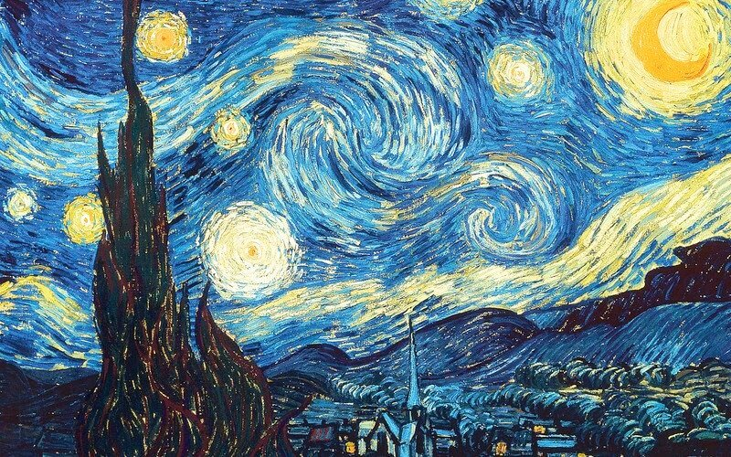
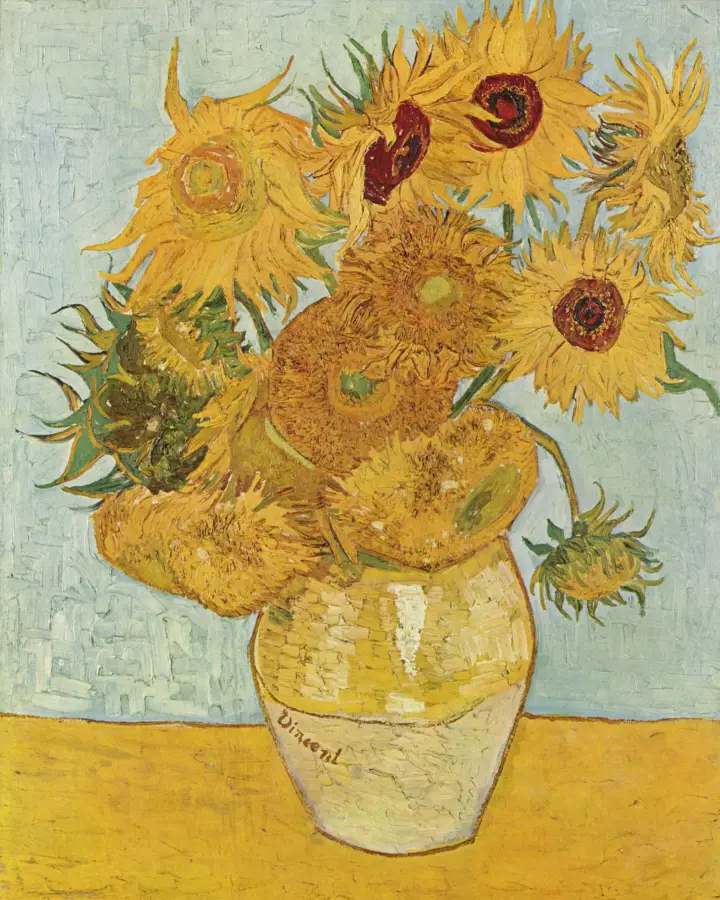

Conteúdo Histórico
ceu estrelado van gogh
Pintada em 1889, a obra retrata uma paisagem noturna com um céu estrelado e uma pequena vila abaixo. Isto é, Van Gogh produziu essa magnífica pintura enquanto estava internado em um hospital psiquiátrico, o que a torna ainda mais intrigante e simbólica.
girassóis

Van Gogh pintou os "Girassóis" em 1888, como parte de quatro obras criadas para decorar a casa amarela em Arles, onde esperava receber o pintor Paul Gauguin. As pinturas simbolizavam a amizade que Van Gogh desejava estabelecer com Gauguin, com quem ele trabalhou entre outubro e dezembro daquele ano.